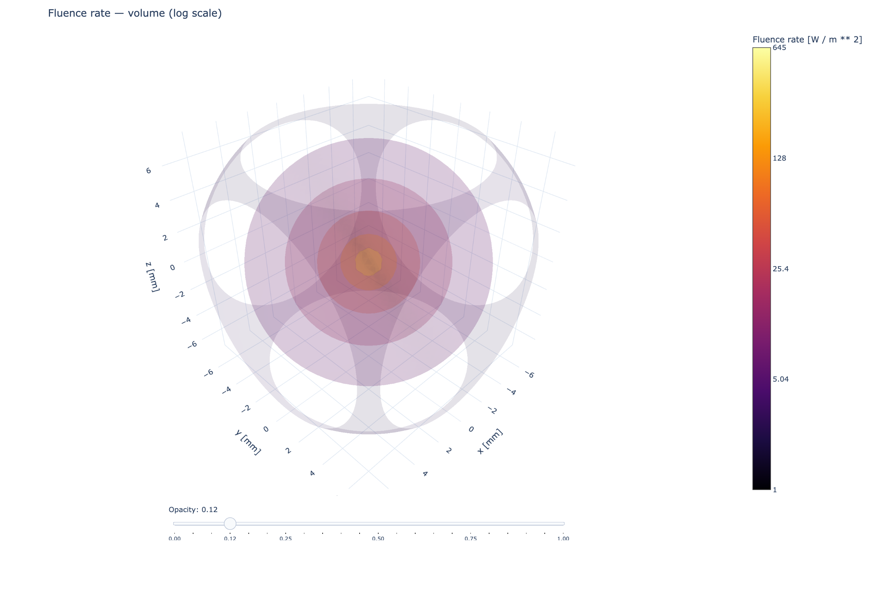

Transport theory and approximations#
MomentRT currently implements steady-state P1 diffusion. It does not solve the full radiative transfer equation (RTE), a higher-order \(P_N\) system, or an \(SP_N\) approximation. Those models have different angular closures and capabilities. The two implemented solvers use the same diffusion physics in different geometries: an analytical Green function for an infinite homogeneous medium and a finite-domain FEM solve.
How to read this theory#
The derivation follows a sequence of modeling choices:
Describe incoherent radiant power by a directional radiance.
Integrate over directions to obtain balance equations for angular moments.
Close those equations with the first-order spherical-harmonic expansion.
In steady state, eliminate current to obtain a scalar diffusion equation.
Select boundary conditions and discretize the spatial equation.
The angular closure determines which directional information the model retains. Boundary conditions determine how light enters and leaves a finite sample. The finite element method determines how the chosen continuous equation is approximated on a mesh. Refining the mesh improves the spatial approximation; it does not restore angular information discarded by P1.
For the boundary and spatial discretization, continue with Finite-sample P1 solver. For time dependence and the telegrapher equation, continue with Time-dependent P1 and the telegrapher equation. The time-dependent equations are background theory, not implemented solver options.
Quantities and units#
The discussion is monochromatic: optical coefficients describe one specified wavelength. MomentRT does not calculate a material spectrum from a wavelength. The caller supplies appropriate coefficients for the chosen wavelength.
Symbol |
Meaning |
Units |
|---|---|---|
\(\mathbf r\), \(\mathbf s\) |
Position and unit travel direction |
\(\mathrm m\), dimensionless |
\(L\) |
Radiance per unit solid angle |
\(\mathrm{W\,m^{-2}\,sr^{-1}}\) |
\(\Phi\) |
Fluence rate: radiance integrated over all directions |
\(\mathrm{W\,m^{-2}}\) |
\(\mathbf J\) |
Net radiant current per unit area |
\(\mathrm{W\,m^{-2}}\) |
\(\mu_a\), \(\mu_s\), \(\mu_s'\) |
Absorption, scattering, and reduced scattering coefficients |
\(\mathrm{m^{-1}}\) |
\(g\) |
Mean cosine of the scattering angle |
Dimensionless |
\(D\) |
Diffusion coefficient in MomentRT’s steady transport convention |
\(\mathrm m\) |
\(Q\), \(q_0\) |
Directional volume source and its angular integral |
\(\mathrm{W\,m^{-3}\,sr^{-1}}\), \(\mathrm{W\,m^{-3}}\) |
\(I_{\mathrm{in}}\) |
Prescribed incoming diffuse partial-current irradiance at a face |
\(\mathrm{W\,m^{-2}}\) |
Fluence rate is not the flux through a particular plane. For perfectly isotropic radiance \(L=L_0\), one has \(\Phi=4\pi L_0\) but \(\mathbf J=\mathbf 0\): light crosses a plane equally in both directions. A high fluence therefore need not imply a large net current. Absorbed power density is \(\mu_a\Phi\), and integrating it over a volume gives absorbed power in watts.
Radiative transfer and angular moments#
Let \(L(\mathbf r,\mathbf s)\) denote radiance at position \(\mathbf r\) in direction \(\mathbf s\). A steady, monochromatic transport equation with absorption, scattering, and source \(Q\) can be written
Here \(\mu_a\) is the absorption coefficient, \(\mu_s\) the scattering coefficient, and \(p\) a normalized phase function. The angular moments describe how radiance is distributed in direction at each point. The zeroth moment is the fluence rate and the first moment is the vector current:
The streaming term \(\mathbf s\cdot\nabla L\) describes propagation along a ray. Absorption removes radiant power. Scattering removes radiance from one direction and adds it to other directions through the integral term. The source \(Q\) adds radiance inside the volume.
This transport model describes incoherent intensity. It does not evolve the electromagnetic field phase, interference, or polarization. A telegrapher equation derived from these moments remains an intensity-transport approximation; its wave-like mathematical form does not turn it into Maxwell’s equations.
The phase function is normalized over outgoing directions, so scattering redistributes radiance without creating or destroying radiant power. Its first angular moment is summarized by the anisotropy \(g\), the mean cosine of the scattering angle. Positive \(g\) describes predominantly forward scattering; \(g=0\) describes isotropic scattering. In the RTE above, the phase normalization is \(\int_{4\pi}p(\mathbf s,\mathbf s')\,d\Omega=1\) for each incoming direction \(\mathbf s'\). For a rotationally symmetric scattering medium, its first directional moment is \(\int_{4\pi}\mathbf s\,p(\mathbf s,\mathbf s')\,d\Omega =g\mathbf s'\). This identity is why the first moment of the scattering gain is \(g\mathbf J\).
The transport equation couples these moments to higher angular moments. \(\Phi\) is the radiance integrated over all directions, while \(\mathbf J\) weights each direction by its unit vector to record the local net flow. With the convention used here, both quantities have units of \(\mathrm{W\,m^{-2}}\).
Taking angular moments produces a hierarchy: the balance of \(\Phi\) depends on \(\mathbf J\), and the balance of \(\mathbf J\) depends on the second moment tensor
The dyadic \(\mathbf s\mathbf s\) records how strongly radiance points along each pair of axes. Equations for \(\mathbf P\) involve still higher moments, so the hierarchy does not close by itself. A finite model needs a rule that estimates the next moment from the moments it retains.
How P1 closes the moment equations#
P1 expands angular radiance in spherical harmonics and retains the isotropic term and the three first-order directional terms. Written in terms of the moments above, this approximation is
In a full expansion, the angular basis is \(Y_{\ell m}(\mathbf s)\), with degree \(\ell\) and azimuthal index \(m\). P1 keeps \(\ell=0,1\), so there are \(1+3=4\) real angular coefficients in three dimensions. These can be represented by one scalar \(\Phi\) and the three components of \(\mathbf J\). The name P1 refers to angular order; it does not mean that only one unknown is retained.
The factor \(1/(4\pi)\) normalizes the isotropic part: integrating that term over the sphere returns \(\Phi\). The factor 3 normalizes the first order term, since \(\int_{4\pi}\mathbf s\mathbf s\,d\Omega=(4\pi/3)\mathbf I\); integrating \(\mathbf sL\) therefore returns \(\mathbf J\).
Substitute this approximation into the second moment. The isotropic term contributes \(\Phi\mathbf I/3\); the first-order term integrates to zero because every odd power of direction cancels between opposite directions. P1 therefore uses the closure
This is the precise step that removes the unknown second moment and closes the first two equations. It says that, to leading order, radiation is spread equally over directions. The first-order correction allows a modest net flow, but P1 cannot preserve a narrow beam, a sharply directional source, or strong angular anisotropy.
The closure can also be checked component by component. The necessary angular integrals are
The first and third integrals vanish by symmetry under \(\mathbf s\mapsto-\mathbf s\). The second is isotropic and has trace \(\int|\mathbf s|^2d\Omega=4\pi\), which fixes the factor \(1/3\). Consequently \(P_{ij}=\Phi\delta_{ij}/3\).
P1 does not automatically preserve nonnegative radiance. Its reconstructed minimum over directions is
A nonnegative P1 angular reconstruction requires \(|\mathbf J|\le\Phi/3\). General nonnegative radiance only requires \(|\mathbf J|\le\Phi\), so a physically possible strongly directional field may already be outside the useful range of the linear P1 ansatz. MomentRT solves for fluence and current rather than reconstructing a guaranteed nonnegative angular distribution.
Diffusion equation#
To derive the first two moment equations, define the zeroth and first moments of the source by
Integrating the transport equation over all angles gives the zeroth balance. Scattering gain and loss cancel because scattering conserves power. For the first balance, multiply the transport equation by \(\mathbf s\) before integrating. A fraction \(g\) of the directed scattering current remains in the same direction on average, leaving the net current loss \(\mu_s(1-g)\mathbf J=\mu_s'\mathbf J\). Before making the P1 closure, these balances are
The cancellation in the zeroth balance follows explicitly from phase normalization:
That gain cancels the scattering loss \(\mu_s\Phi\). The first moment instead retains directional memory \(g\), so its gain is \(\mu_s g\mathbf J\); subtracting it from \((\mu_a+\mu_s)\mathbf J\) leaves \([\mu_a+\mu_s(1-g)]\mathbf J\).
Now substitute \(\mathbf P\approx\Phi\mathbf I/3\) from the P1
approximation above. An isotropic volume source, including the point source
used by InfiniteDiffusion, has no preferred direction and therefore
\(\mathbf q_1=\mathbf 0\). The resulting first two P1 equations are
Here \(q_0\) is source power per volume and \(\mu_s'=\mu_s(1-g)\) is reduced scattering. Absorption and effective scattering remove directed current, which is why they appear together in the current balance.
The second equation can now be solved algebraically for \(\mathbf J\):
This is the steady P1 diffusion equation used by MomentRT. It is a scalar conservation equation for fluence rate. In a source-free region, \(q_0=0\); an isotropic volume source contributes its power density to \(q_0\). MomentRT’s finite solver has no volume source term: it supplies illumination on a sample face, which enters through the boundary condition derived in Finite-sample P1 solver rather than through \(q_0\) or \(\mathbf q_1\).
MomentRT asks for \(\mu_a\) and \(\mu_s'\) directly, both in inverse length units. It does not infer \(\mu_s'\) from \(\mu_s\) and \(g\). In this convention \(D\) has units of length, \(\Phi\) and \(\mathbf J\) have units of \(\mathrm{W\,m^{-2}}\), and integrated source and power terms have units of watts. With spatially varying material properties, \(D\) varies in space and remains inside the divergence operator; replacing \(\nabla\cdot(D\nabla\Phi)\) by \(D\nabla^2\Phi\) would incorrectly drop gradients of \(D\).
The transport mean free path \(\ell_{\mathrm{tr}}=1/(\mu_a+\mu_s')\) is the distance over which the first angular moment loses its direction. The diffusion approximation is most useful when fluence changes over distances long compared with this scale, so that local angular distributions are close to the P1 form.
For example, illustrative coefficients \(\mu_a=0.02\,\mathrm{mm^{-1}}\) and \(\mu_s'=1.0\,\mathrm{mm^{-1}}\) give \(D\approx0.327\,\mathrm{mm}\) and \(\ell_{\mathrm{tr}}\approx0.980\,\mathrm{mm}\). These numbers describe the chosen model. They do not establish that P1 is accurate at a particular distance from a source or interface.
Conservation over a sample#
Integrating the zeroth moment over a volume and using the divergence theorem gives
For the finite solver, \(q_0=0\) inside the sample. Incoming illumination makes the net outward current negative on the illuminated part of the boundary; absorption and escape balance that incoming power. A source-free interior therefore does not imply a dark sample.
The local equation and the global power balance are two forms of the same conservation law. This is why a numerical solution can conserve total power very accurately while retaining a mesh error or a transport-model error.
Infinite homogeneous point source#
For constant optical coefficients in unbounded three-dimensional space, an isotropic point source with power \(P\) gives
Away from the point source, the radial field satisfies \(D\nabla^2\Phi=\mu_a\Phi\). For a radial function, \(\nabla^2\Phi=r^{-2}\partial_r(r^2\partial_r\Phi)\). Setting \(u=r\Phi\) reduces the equation to \(u''=\kappa^2u\), where \(\kappa=\sqrt{\mu_a/D}\). Only the decaying solution \(u\propto e^{-\kappa r}\) is finite at infinity. The point source fixes the amplitude by conserving power through a small sphere around it. If \(\Phi=Ae^{-\kappa r}/r\), the outward radial current is \(J_r=-D\partial_r\Phi\). Its integral over a sphere of radius \(r\) is
Setting that limit equal to the source power \(P\) gives \(A=P/(4\pi D)\), and hence the Green function
InfiniteDiffusion evaluates this expression at every node in a
CartesianMesh. The mesh is only a window into the infinite solution. There
is no finite-sample boundary condition, interface, or external reflectance in
this result. A node exactly at \(r=0\) is rejected because the ideal point
source is singular; the model does not silently soften or spread the source.
The exponential sets the attenuation length \(1/\kappa\); the factor \(1/r\) is the geometric spreading of power over a sphere of area \(4\pi r^2\). Together they show the model’s two length scales: directional randomization through \(\ell_{\mathrm{tr}}\) and absorption through \(1/\kappa\). The absorption sweep example compares the resulting radial profiles while holding reduced scattering and source power fixed.


An infinite-medium P1 field evaluated on a finite observation grid. The observation-window box is not a physical boundary, and the near-source values remain subject to the diffusion approximation.#
Diffusion is an approximation#
P1 is most plausible after scattering has made radiance nearly diffuse and when the field varies over distances larger than the transport mean free path
It becomes less reliable near a point source, near an illuminated boundary, in weakly scattering or optically thin regions, around sharp optical transitions, and when source-detector separation is short. The diffusion law replaces angular detail by a local gradient relation; a smooth-looking field does not establish that the physical field is accurate.
MomentRT provides passive contact Finite-aperture surface detectors with an additional Lambertian escape assumption and independent monochromatic Wavelength-dependent materials and sweeps sweeps. It does not provide collimated-source propagation, time dependence, broadband spectral integration, chromophore fitting, or inverse estimation. Refractive index is stored with materials, but no automatic Fresnel rule is derived from it. In the finite solver all internal refractive indices must be equal; an external diffuse boundary coefficient must be supplied explicitly.
What the order labels mean#
\(P_1\) is the first-order spherical-harmonic angular expansion used to derive diffusion. \(P_N\) denotes a general finite spherical-harmonic expansion through order \(N\); it contains multiple coupled angular moments. \(SP_N\) is a simplified transport approximation, often arranged as coupled diffusion-like equations for scalar combinations of moments. Asymptotic derivations treat it as a correction to diffusion under specified transport scalings. In multiple dimensions it does not retain the complete angular information of full \(P_N\).
In three dimensions, a full P3 expansion retains every angular degree \(\ell=0,1,2,3\), giving \((3+1)^2=16\) angular coefficients. It does not run separate P1, P2, and P3 solves. P2 also exists: even angular orders are legitimate truncations. The common sequence P1, P3, P5 reflects practical parity and boundary-condition choices in many formulations; it is not a rule forbidding P2.
For the same reason, SP3 and P3 are not interchangeable names. A common steady SP3 formulation has two coupled scalar equations after eliminating auxiliary moments, but it uses its own closure and boundary conditions. Replacing a diffusion coefficient or increasing the number of iso-surfaces in a plot cannot turn the present solver into SP3.
For the asymptotic basis of simplified moment systems, see the original SPN derivation and the work on time-dependent SPN equations. Neither label means that a P1 solve secretly contains P2 or P3. MomentRT offers the P1 diffusion equation above, the separate SP3 transport model solver, and the full three-dimensional Full three-dimensional P3 transport moment system.
Angular order and finite element order#
The transport closure and spatial approximation can both carry a P1 label:
Transport P1 truncates the angular spherical-harmonic expansion.
Linear tetrahedral finite elements use polynomials of degree one in position inside each tetrahedron.
MomentRT currently uses both. Raising the spatial polynomial degree would improve how the diffusion field is represented within an element, while raising the transport angular order would change the physical equations and their unknowns. They are independent changes.
From theory to the public API#
Material.absorption supplies \(\mu_a\), and
Material.reduced_scattering supplies \(\mu_s'\). The material’s
refractive_index does not enter the implemented bulk steady diffusion
coefficient. Internal index changes are rejected by the finite solver, and
external diffuse reflectance is configured separately.
InfiniteDiffusion evaluates the Green function in this chapter.
Diffusion assembles the finite weak problem in Finite-sample P1 solver.
RobinBoundary selects a diffuse partial-current boundary law.
result.fluence stores nodal \(\Phi\), while the finite solver’s
result.flux stores element-centered \(\mathbf J\). The source
wavelength selects coefficients from a supplied SpectralMaterial table.
A fixed Material retains its configured coefficients. Neither choice
infers an optical spectrum from the wavelength label.